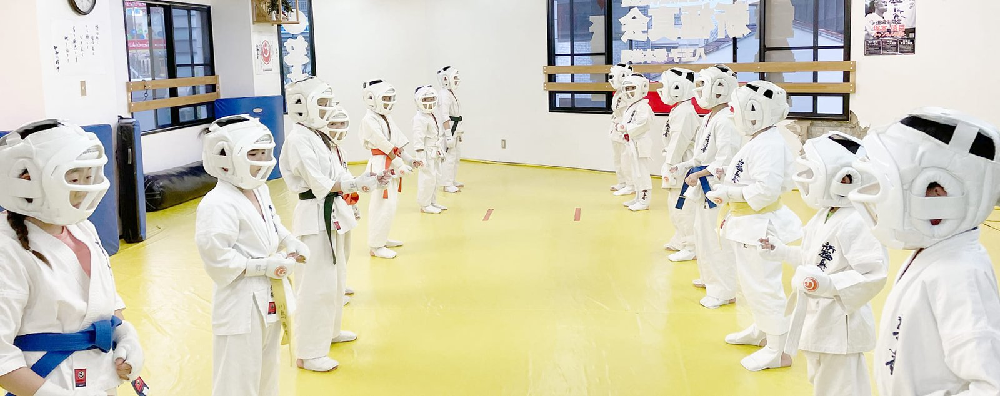
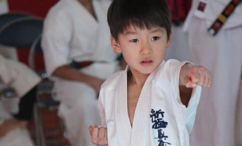
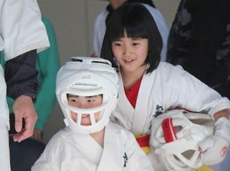
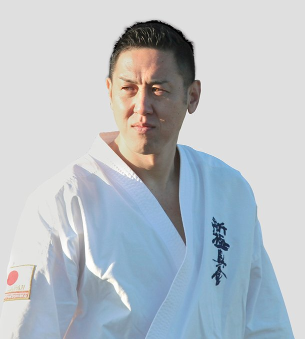
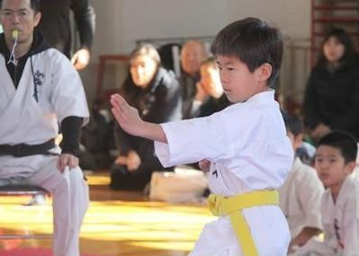
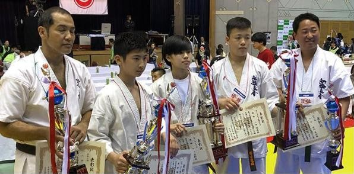
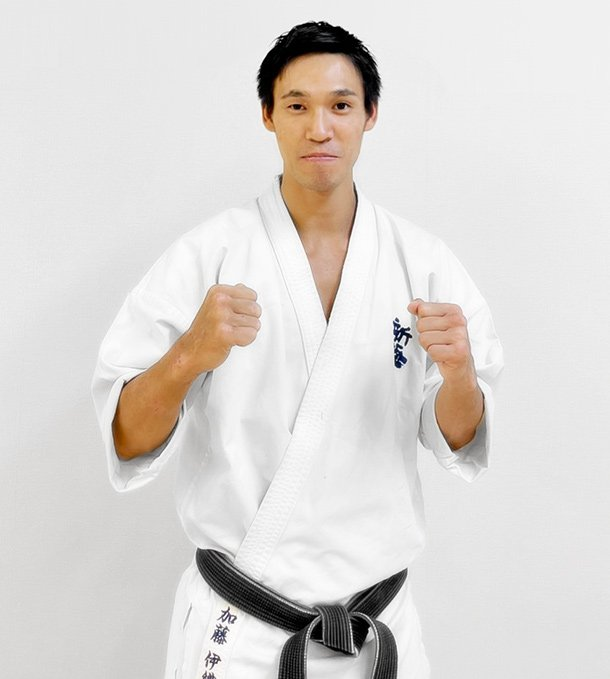
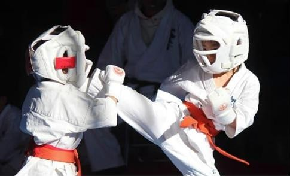
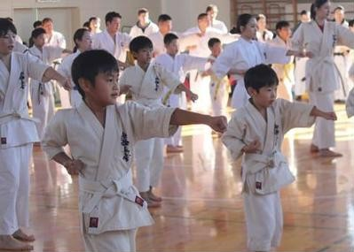

JR八王子駅北口から歩いて9分の空手道場
世界大会で2度優勝した塚本徳臣師範が率いる塚本道場の八王子道場です。小学生から大人まで、礼儀とあきらめない心を、毎日の稽古の中で身につけます。



駅から
JR八王子駅北口 徒歩9分
少年部の稽古
月〜土 週6日
いま入会すると
入会金0円・初月無料
Googleマップの口コミ
★4.8（13件）
入会金0円・初月無料・道着プレゼント
道着のプレゼントは先着10名さままでです。
道場の特長

01
世界大会で2度優勝した塚本徳臣師範が代表を務める塚本道場の道場です。師範の稽古の考え方を、加藤指導員が八王子で伝えています。

02
稽古は礼に始まり、礼に終わります。強さだけでなく、相手を思いやる心を大切にしています。

03
帯の審査や大会など、がんばった成果を確かめる機会があります。一つずつ目標をこえていく経験が、自信になります。
空手で身につく力
あいさつ、返事、道場への一礼。毎回の稽古で自然と身につきます。
号令に合わせて動く基本稽古で、話を聞いて動く力が育ちます。
突き・蹴り・移動稽古で、全身をバランスよく使います。
できなかった技ができるようになる。その積み重ねが心を強くします。
指導者

八王子道場 指導員・初段
八王子道場の少年部・一般部の稽古をすべて担当しています。体験会や見学のときも、加藤指導員がご案内します。
塚本道場 代表
新極真会の世界大会で2度の優勝。塚本道場の代表です。八王子道場の稽古は加藤指導員が担当し、師範の稽古の考え方を八王子で伝えています。
稽古の流れ
内容は日によって変わります。
時間割
2026年11月時点、塚本道場公式サイトに載っている八王子道場の時間割です。
| 曜日 | 少年部（小学生） | 一般部（中学生以上・大人） |
|---|---|---|
| 月 | 少年部 17:00〜18:30 | 一般部 19:30〜21:00 |
| 火 | 少年部 17:00〜18:30 | 一般部 19:30〜21:00 |
| 水 | 少年部 17:30〜18:30 | — |
| 木 | 少年部 17:00〜18:30 | 一般部（組手クラス）19:30〜21:00 |
| 金 | 少年部 17:00〜18:30 | 一般部 19:30〜21:00 |
| 土 | 少年部 10:00〜11:00 | — |
| 日 | お休み | — |
料金
少年部
8,800円／月
一般部（男子）
12,100円／月
一般部（女子）
9,900円／月
体験会
見学と体験は、体験会の日以外でもいつでも受け付けています。お子さまと一緒に、道場の雰囲気を見に来てください。
次回の体験会の日程
① 2026年11月29日（日）10:00 開始 ② 2026年12月20日（日）14:00 開始
体験内容：ミット打ち（突き・蹴り）
持ち物：動きやすい服装・タオル・飲み物（道着は不要です）
参加者全員に、お名前入りの「体験修了証」をお渡しします（体験修了証は体験会でのみ発行されます）。
入会までの流れ
出張演舞
八王子の「肉フェス」や八王子駅前でも演舞を行いました。礼儀正しく、迫力のある演舞で、会場を盛り上げます。

費用・うかがえる地域・演舞の時間は、内容に合わせてご相談ください。
ギャラリー
八王子道場と、塚本道場の稽古・大会の写真です。

よくある質問
A. 大丈夫です。基本の動きから、一人ひとりのペースで覚えていきます。
A. できます。見学と体験は、体験会の日以外でもいつでも受け付けています。LINEでご連絡ください。なお、体験修了証は体験会でのみ発行されます。
A. 少年部は小学生、一般部は中学生以上の方が対象です。
A. 一般部は大人の方も通っています。運動不足の解消に始める方も歓迎です。
A. 体験会の欄の「持ち物」をご覧ください。
A. 入会金は0円、初月の月会費は無料です。年会費・サポーターなどは加藤指導員にご確認ください。
A. 場所・日時・内容をLINEでお知らせください。うかがえるかどうかと費用をご案内します。
アクセス
まずは体験会へ。
入会金0円・初月無料・道着プレゼント（先着10名）